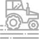

Haqqımızda
On the basis of state support, Ulu Agro LLC, Gakh AgroPark was established in 2017 in the territory of Gakh District on the area of 2076 ha. Agro Park was established to ensure food security in the country, reduce dependence on imports, increase employment in the region, more efficient use of modern methods and latest technologies based on traditional practices, and to bring and properly represent Azerbaijani products in foreign markets.
256
Anbar
2452
Mal qara

348
Texnika
3446
İstehsal
Following
Following its dynamic development since its establishment, a
wide range of fruits, vegetables and cereals with high quality
and productivity are grown in the Park. Adding value to the
products and supporting small and medium-sized businesses in the
region are among the company's core principles.
Our quality and healthy products in accordance with
international standards allow us to strengthen in foreign
markets, and one of our goals is to promote the brand of ‘’Made
in Azerbaijan’’ around the world. At the same time, our company
participates in social responsibility programs.

Saxlama anbarları
At the same time, our company participates in social responsibility programs.

Following
• The products grown in the park are divided into two groups:
cereals and orchards. Crop production consists of wheat, corn,
barley and soybeans, and orchards consist of pears, apples,
apricots, cherries, peaches, walnuts, grapes and almonds.
• 28 Vally pivot system made in the USA were installed on 700
hectares of sown area; 650 hectares of sown land are also
irrigated with rainwater. The orchards, which cover more than
750 hectares, are equipped with fully automatic drip irrigation
systems from Turkey, Spain and Israel.
• Silo-type warehouses with a capacity of 4,500 tons and 8,000
tons of grain warehouses were built in the agro-park.
• 3 water basins of 50,000, 20,000 and 10,000 cubic meters were
built for water needs.
• 99 different types of necessary equipment were purchased.